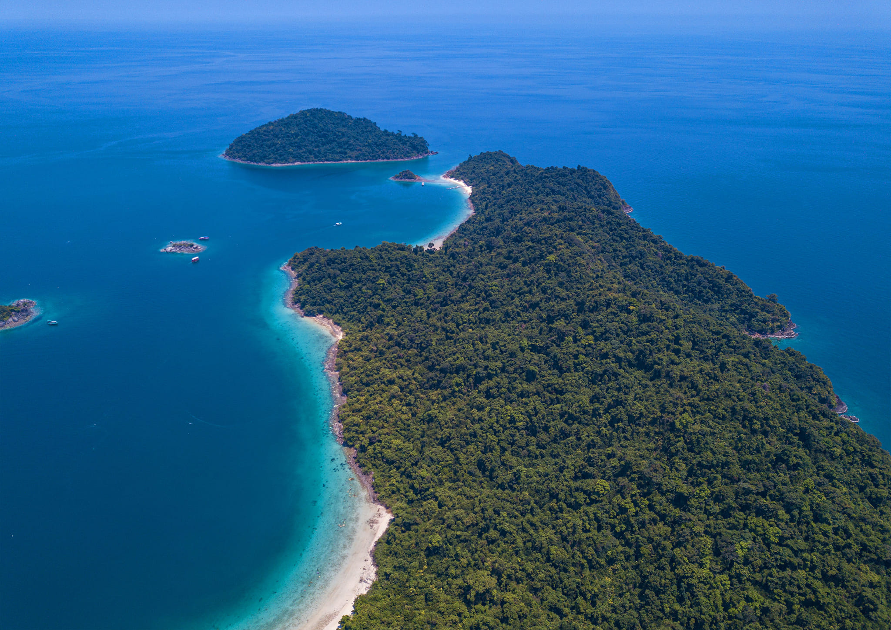
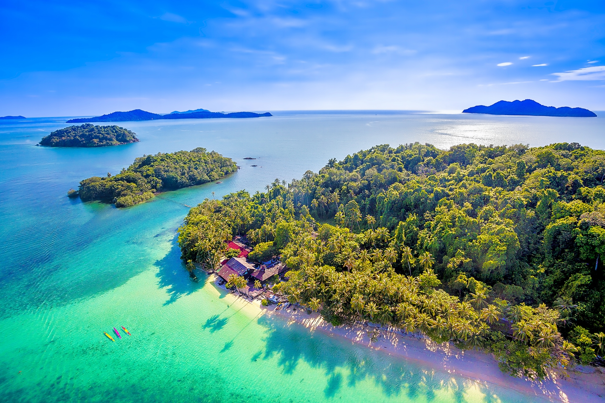
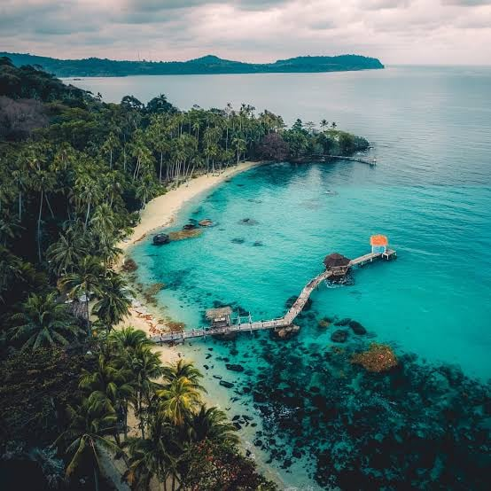
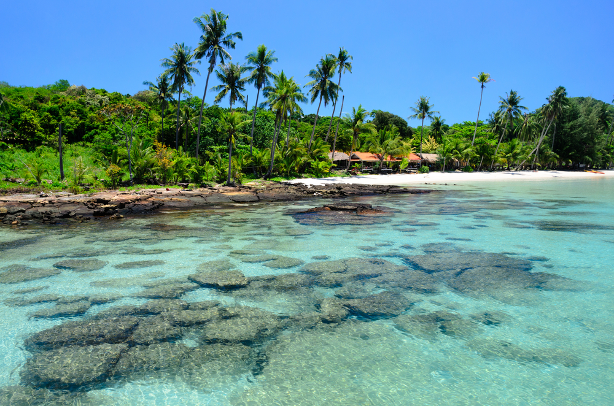
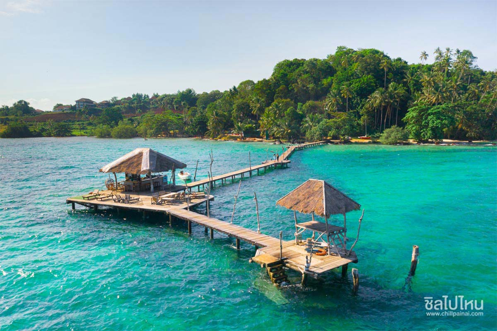
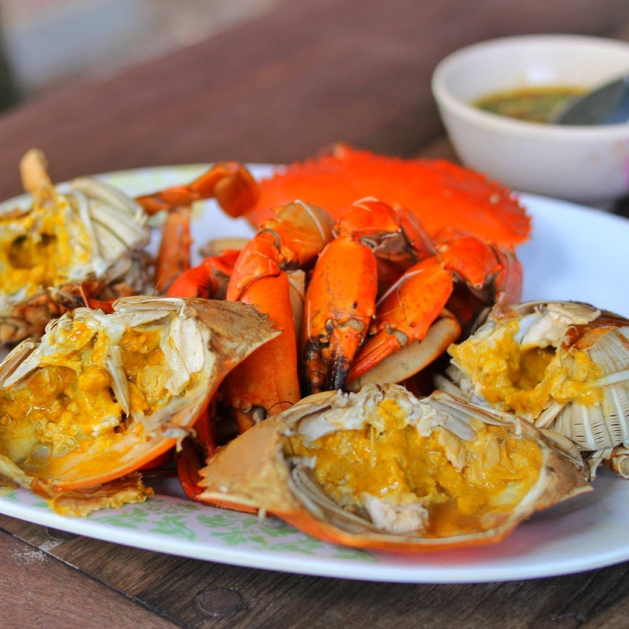
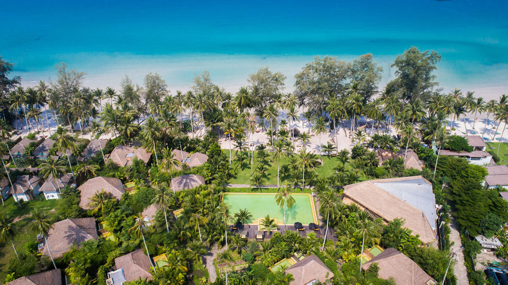

ข้อมูลเบื้องต้นของจังหวัดตราด
ตราด เป็นจังหวัดชายแดนภาคตะวันออกของประเทศไทยที่มีชื่อเสียงระดับโลกในด้านเกาะแก่งและชายหาดที่สวยงามอุดมสมบูรณ์ เช่น เกาะช้าง เกาะกูด และเกาะหมาก เป็นเมืองท่องเที่ยวทางทะเลอันดับต้นๆ ที่นักท่องเที่ยวทั้งชาวไทยและชาวต่างชาติต้องมาเยือน
3 สถานที่ท่องเที่ยวห้ามพลาด
เจาะลึกสถานที่ไฮไลต์อันงดงามของจังหวัดตราด พร้อมภาพบรรยากาศ
1. เกาะช้าง
เกาะช้าง เป็นเกาะที่ใหญ่ที่สุดในหมู่เกาะทะเลตะวันออก และใหญ่เป็นอันดับ 2 ของประเทศไทย รองจากเกาะภูเก็ต มีสภาพภูมิประเทศเป็นภูเขาสูงมีป่ารกทึบ มีหาดทรายขาวละเอียด น้ำทะเลใสสะอาด พร้อมกิจกรรมดำน้ำ ชมธรรมชาติ และน้ำตกสวยๆ มากมาย
📷 เกาะช้าง


2. เกาะกูด
เกาะกูด ได้รับสมญานามว่าเป็น "มัลดีฟส์เมืองไทย" เป็นเกาะสุดท้ายแห่งน่านน้ำตะวันออกที่มีหาดทรายขาวเนียนละเอียดดั่งแป้ง น้ำทะเลใสราวกระจกสีมรกต บรรยากาศเงียบสงบ เหมาะแก่การพักผ่อนอย่างแท้จริง
📷 เกาะกูด


3. เกาะหมาก
เกาะหมาก เกาะแสนสงบที่ขึ้นชื่อเรื่องการท่องเที่ยวแบบคาร์บอนต่ำ (Low Carbon) มีความร่มรื่นของสวนมะพร้าว ชายหาดโค้งเว้าสวยงาม และน้ำทะเลใสสะอาด เหมาะสำหรับปั่นจักรยานชมวิวและพักผ่อนในบรรยากาศที่เป็นกันเอง
📷 เกาะหมาก

ร้านอาหารและของกินขึ้นชื่อ

ร้านอาหาร บ้านทิวธารา ตราด
เมนูแนะนำ: ปูไข่ผัดพริกไทยสด ผัดฉ่าทะเล หมึกไข่นึ่งมะนาว หมึกไข่ย่าง
ลิ้มรสอาหารทะเลสดๆ ส่งตรงจากทะเลตะวันออก พร้อมเมนูพื้นบ้านตราดแท้ๆ รสชาติจัดจ้านกลมกล่อมถึงเครื่องแกงใต้และตะวันออก
📍 เปิดพิกัด GPS ร้านอาหารที่พักแนะนำสุดฟิน

High Season Pool Villa & Spa
สไตล์: รีสอร์ทติดริมทะเลหาดทรายขาว
ป็นรีสอร์ตหรูระดับ 5 ดาว บนเกาะกูด จังหวัดตราด ตั้งอยู่ริมหาดคลองเจ้า ซึ่งเป็นหาดที่มีทรายขาวสะอาดและน้ำทะเล บรรยากาศร่มรื่นด้วยสวนปาล์มธรรมชาติ สระว่ายน้ำขนาดใหญ่ และสิ่งอำนวยความสะดวกครบครันสำหรับการพักผ่อนริมทะเล
📍 เปิดพิกัด GPS ที่พัก